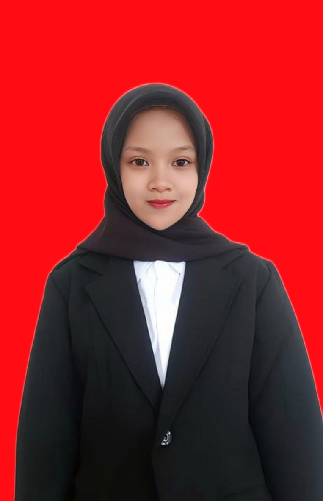

Sistem Informasi | Universitas Trunojoyo Madura
Saya Rika Trismawati, berasal dari Sampang, Madura. Saat ini saya merupakan mahasiswa angkatan 2025 di Program Studi Sistem Informasi, Universitas Trunojoyo Madura (UTM). Saya memiliki ketertarikan di bidang teknologi informasi, khususnya dalam pengembangan website dan sistem informasi. Saya menyadari bahwa kemampuan saya dalam coding masih terbatas, namun saya memiliki kemauan yang kuat untuk terus belajar dan berkembang.
Robatal, Sampang
Robatal, Sampang
Robatal, Sampang
Email: rikatrisma@email.com
WhatsApp: 085954085650